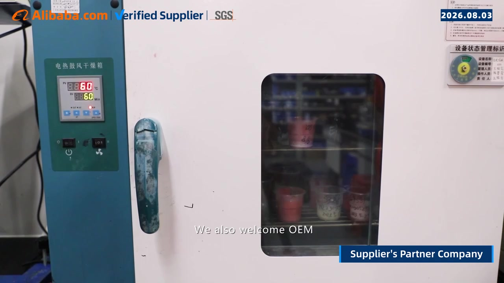

1. Define the claim and the market
Record the destination country, product category and intended users. Identify the precise substances covered by the claim. HEMA, Di-HEMA Trimethylhexyl Dicarbamate and TPO are distinct ingredient identities; do not infer the absence of one from the absence of another.
Ask whether the claim refers to no intentional addition or to a defined analytical result. These are different statements. Have the proposed wording and substantiation reviewed for the destination before using it on packaging or advertising.
2. Match documents to the product
| Evidence | What to verify | What it cannot establish alone |
|---|---|---|
| Ingredient information | Exact formula code, revision and relevant ingredient identities | Independent confirmation of every batch |
| Supplier declaration | Named substances, scope, date and signatory | Laboratory confirmation of absence |
| SDS | Product identity, revision and applicable safety information | A complete formula or blanket market authorization |
| Batch COA | Batch ID, tested properties, methods and specification | Untested ingredient claims |
| Laboratory report | Sample identity, analytes, method, results and reporting limits | Compliance of unrelated formulas or future batches |
Request confidential composition information through an appropriate route to the responsible assessor when needed. Resolve inconsistent product names and formula codes before accepting the evidence.
{kind=link}

3. Interpret laboratory evidence correctly
Agree with the laboratory on the substances to measure, the sample matrix, the method's suitability and relevant detection or quantification limits. Check how the tested sample was selected and how it connects to your order. A “not detected” result means the substance was not detected under that method and its stated limit; it is not a claim of absolute zero.
Confirm the laboratory's relevant competence and accreditation scope where applicable. Reassess the evidence when the formula, raw materials or manufacturing arrangements change.
4. Check destination requirements separately
European Union — TPO: The European Commission states that TPO in cosmetic products has been prohibited from 1 September 2025. Its guidance also addresses existing stock and professional use. A TPO-free claim therefore does not replace checking all other applicable cosmetic requirements. European Commission TPO questions and answers.
European Union — HEMA and Di-HEMA TMHDC: Regulation (EU) 2020/1682 restricts these substances in nail products to professional use and requires the specified professional-use and allergic-reaction warnings. HEMA-free should not be interpreted as allergy-free. Regulation (EU) 2020/1682.
United States: Assess applicable MoCRA and other cosmetic obligations for the product and responsible parties. FDA states that facility registration and product listing are not product or facility approval, and it does not issue certificates verifying these registrations or listings. FDA registration and listing information.
For other destinations, obtain a separate review of current local requirements. Do not transfer an EU conclusion automatically to another market. The points above address selected issues and are not a complete market-entry checklist.
5. Keep the claim controlled after approval
Save the approved formula revision, declaration, reports and claim wording. Specify change-notification requirements and review new evidence when relevant changes occur. Match the label in production to the approved version.
Common questions
Does HEMA-free mean allergy-free? No. Avoid turning a claim about one ingredient into an unsupported safety claim about the whole formula.
Can one report cover all colors? Only accept a defined coverage rationale supported by the relevant technical reviewer; do not assume different formulas are identical.
Does TPO-free mean ready to sell in the EU? No. The finished product still needs assessment against all applicable requirements.
Source review
Official sources checked on 10 September 2026. Review current destination rules and product-specific evidence with the relevant qualified assessor before making a market-entry decision.